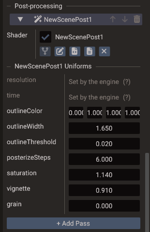
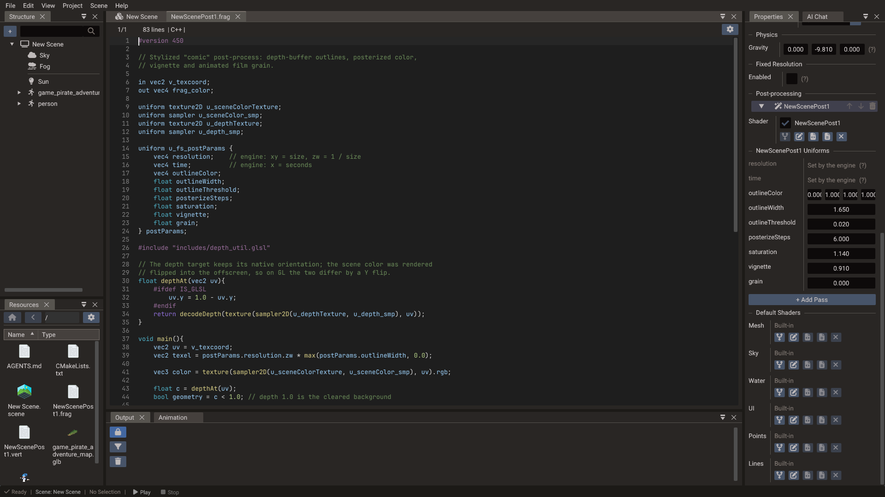

Custom Shaders¶
Quantum ships built-in shaders for each renderable type (Mesh, UI, Points, Lines, Sky, Water). The editor lets you fork any of them into your project, edit the GLSL in the Code Editor, and see the result in the viewport — without leaving the editor. Forked shaders are compiled and shipped with your project just like the built-in ones.
The same fork mechanism drives post-process passes — fullscreen shaders a scene runs over the finished image.
How customization works¶
A custom shader is a fork of a built-in shader. The editor copies the built-in
entry-point files (for example mesh.vert and mesh.frag) into a folder you pick in your
project; you edit the shading code while the rest of the rendering contract stays intact:
- The variant system is unchanged — the engine still injects the same feature defines (skinning, normal maps, shadows, IBL, fog, instancing, …) based on the mesh, so your edited shader keeps working across all of those cases.
- Skinned forks that
#include "includes/skinning.glsl"bind bone matrices through a storage buffer, or through a bone texture when the editor compiles for OpenGL / OpenGL ES (SKINNING_TEXTURE). Re-fork that include if you copied an olderskinning.glslthat still declaredmat4 bonesMatrix[MAX_BONES]in a uniform block. - The shadow, depth, and G-buffer passes keep using the built-in shaders, so shadow casting and screen-space effects continue to work. A Mesh can fork its depth shader as well — the one behind its shadow maps and the depth pre-pass — for a colour fork that moves vertices or discards fragments (see The Depth Shader row).
#includedirectives still resolve against the engine's shader library, so you only need the top-level.vert/.frag— not the whole include tree. If you want to edit the includes as well, the fork dialog can copy them for you (see Includes).
This means you customize the surface/shading logic while the engine continues to drive lighting, passes, and built-in inputs. Values of your own — a wave speed, a dissolve amount, the current time — reach the fork through its shader uniforms.
The Shader row¶
Open the Properties window for a Mesh, UI, Points, Lines, Sky, or Water entity. Each of these components has a Shader row:
| Control | Action |
|---|---|
| Built-in label | Shown when the component uses the default engine shader. |
| Fork | Opens the Fork Shader dialog to choose where the fork is created and what it is called. On confirm it writes the files, assigns them to the component, and opens them in the Code Editor. |
| Edit shader files | Picks the .vert and .frag independently, so entry points that do not share a base name can be assigned. Changes apply as soon as both slots are set (or both cleared). |
| Open vertex / Open fragment | Re-opens the assigned file in the Code Editor. |
| Reset to Built-in | Clears the custom shader and returns to the engine default. |
| Drag-and-drop | Drop an existing .vert/.frag from the Resources Browser onto the row to assign it. |

Fork is available only while the row shows Built-in — reset the shader first to fork it again, so an existing fork is never orphaned by accident.
The Shader row is shown for a single selected entity (the path is per-entity). Assigning, editing, or resetting a custom shader is undoable.
The Depth Shader row¶
A Mesh component has a second row, Depth Shader, with the same controls. It forks
depth.vert and depth.frag — the shader the engine draws the mesh with into shadow
maps, into the optional scene depth prepass,
and into the depth pre-pass that feeds SSAO and post-process depth while SSR is off
(with SSR on, those read the G-buffer, which keeps the built-in shader).
The colour fork never reaches those passes, so a mesh whose fork displaces vertices or
discards fragments keeps casting the shadow of its undisplaced, undiscarded geometry —
and self-shadows against it once the displacement grows. Fork the depth shader too, apply
the same displacement or discard there, and the shadow follows. The variant defines
(skinning, morph targets, terrain, instancing, alpha mask) are the ones depth.vert and
depth.frag already handle, so the fork keeps working across those cases.
A depth fork reads the same shader uniforms as the colour fork, so
one value drives both: declare the same member names in its u_vs_customParams /
u_fs_customParams blocks. It is compiled as soon as it is set — even in a scene with no
shadow-casting light — so its members and build errors show up right away; a fork that
fails to build is reported as Depth shader failed to build under the row while the
built-in depth shader keeps drawing.
The depth shader is per mesh — there is no scene default — and its fork name is pre-filled
with a _depth suffix. Like the colour fork it is undoable, saved with the scene, exported
with the project, and scriptable through customDepthShader (see
Setting values from scripts).
Resolution in a depth fork
resolution is the size of the target being written: the shadow slot of a cascade
or cube face, or the depth pre-pass target.
Depth forks and the depth prepass¶
With the scene depth prepass on, the
depth fork also writes the depth the colour pass tests against, so both must land on the
same pixel. u_vs_depthParams carries mvpMatrix — the light (or camera) view-projection
already multiplied by the model matrix — and depth.vert sets gl_Position from it under
invariant, matching mesh.vert bit for bit. Keep that in a fork: multiplying
lightVPMatrix * modelMatrix yourself still compiles (older forks keep working) but can
round differently and z-fight in the prepass.
A mesh whose colour shader is forked — or covered by a scene default mesh shader — without a depth fork is left out of the prepass and drawn once in the colour pass, since the built-in depth shader cannot know where the fork moves its vertices. Add a depth fork with the same displacement to bring it back in.
Water shaders¶
A Water component has two rows. Shader forks
water.vert and water.frag, the surface itself. Underwater Shader forks
fullscreen.vert and underwater.frag, the fullscreen fade drawn over the scene while
the main camera is below the surface (it needs Underwater on). Its fork name is
pre-filled with an _underwater suffix, and a fork that fails to build is reported as
Underwater shader failed to build under the row while the built-in fade keeps
drawing.
Both forks read the water's shader uniforms — the surface through
u_vs_customParams / u_fs_customParams, the fade through u_fs_customParams — so one
value can drive both. The surface shader can also be a
scene default; the underwater shader is per water only.
The water fork keeps the engine's variant defines: HAS_FOG, USE_SCENE_DEPTH (Depth
Effects), USE_PLANAR_REFLECTION, USE_SHADOWS, and USE_REFRACTION — see
Shader Variants — water.
Keep the engine blocks and the wave math
The engine fills u_vs_waterParams, u_fs_waterParams, and u_fs_underwaterParams
by layout, not by name, so keep them as the fork copied them. New engine versions only
append members at the end of u_fs_waterParams: a fork made on an older version keeps
working without the newer effects, and logs a warning to fork it again.
Water.getHeight, body
buoyancy, and the sorting of transparent objects
around the water use the built-in wave sum. If a fork displaces the surface
differently in water.vert, they no longer match the waves it draws.
The Fork Shader dialog¶
Forking asks where the new shader goes before writing anything:
| Field | Meaning |
|---|---|
| Destination folder | A tree of the folders in your project. Defaults to shaders when it exists, otherwise the project root. |
| Shader Name | The file name stem, without an extension. Letters, digits, and underscores only; other characters become _ as you type. |
| Also fork shader includes | Copies the engine .glsl files this shader actually uses so you can edit them too. See Includes. |
| Will create | The exact files that will be written, project-relative. |
The name is pre-filled from the entity (or the scene and shader type, for a scene default) and gets a numeric suffix if that name is already taken. Create stays disabled while a target already exists — forks never overwrite files, because undoing one deletes what it wrote.
The layout depends on whether you fork the includes:
| Option | Files created |
|---|---|
| Off | <folder>/<name>.vert and <folder>/<name>.frag |
| On | <folder>/<name>/ containing <name>.vert, <name>.frag, and an includes/ copy |
Forking includes gives the shader a folder of its own so your edited copies apply to that shader alone. Creating the fork is a single undoable step — undo removes the files it wrote and restores the previous shader.
Scene default shaders¶
Besides per-component shaders, each scene can set a default custom shader per type. Select the scene (no entity) in the Structure panel and look for the Default Shaders section at the bottom of the scene settings in the Properties window. It shows one row per applicable type — 3D scenes list Mesh, Sky, Water, UI, Points, and Lines; 2D scenes omit Sky and Water; UI scenes list only UI.
Each row offers the same controls as the component Shader row (fork, edit files, open
.vert/.frag, reset, drag-and-drop), and every change is undoable.
The shader used by a component is resolved with this priority:
- Component shader — a custom shader assigned on the component always wins.
- Scene default shader — used by every component of that type with no shader of its own. Its Shader row shows the default's name followed by (scene default).
- Engine built-in — used when neither is set.
A component with no custom shader inherits the scene default; resetting a component's shader returns it to the scene default (or the built-in if the scene has none). To keep a single component on stock shading while a scene default is active, fork the built-in shader for that component and leave it unedited.
A default that declares shader uniforms lists them under its row, below a line named after the fork (for example toon Uniforms). Values set there belong to the scene, and every component that inherits the shader reads them. A component can still set its own value for a member, and that value wins (see Editing values). The rows appear once a component renders with the fork, and they cover the members of every shader variant in use.
Scene default shaders and their uniform values are saved with the scene, applied in play
mode, and exported like any other custom shader — components that inherit them compile and
ship the right shader variants automatically. They are also scriptable via the Scene
properties defaultMeshShader, defaultUIShader, defaultSkyShader, defaultPointsShader,
defaultLinesShader, and defaultWaterShader (see the
Scene reference), and the values through
setDefaultShaderUniform, which
takes the shader type (ShaderType.MESH, ShaderType.UI, and so on).
Shader uniforms¶
A fork can declare a uniform block of its own and have the engine fill it: from rows in the Properties window, from a script every frame, or with the current time. This is how a water, wave, fire, or dissolve effect gets its parameters.
Declare u_vs_customParams in the vertex shader, u_fs_customParams in the fragment
shader, or both. Members are matched by name, so a name that appears in both blocks
receives the same value in both stages:
// wave.vert
uniform u_vs_customParams {
float time;
float amplitude;
} customParams;
// ... in main():
pos.y += sin(customParams.time * 3.0 + pos.x * 4.0) * customParams.amplitude;
Vertex displacement is colour-pass only
A fork only replaces the colour pass, so a vertex moved like this swims while its shadow stays where the mesh data is. Fork the depth shader as well and displace there too, and the shadow (and SSAO, while SSR is off) follows. Screen-space reflections read the built-in G-buffer and keep the undisplaced surface.
// wave.frag
uniform u_fs_customParams {
float time;
vec4 tint;
} customParams;
// ... at the end of main():
g_finalColor.rgb = mix(g_finalColor.rgb, customParams.tint.rgb, 0.5 + 0.5 * sin(customParams.time));
The built-in Mesh, UI, Points, Lines, Sky, Water, underwater, and depth sources all carry a comment showing the declaration, so a fresh fork has it at hand. Nothing else is needed: the block is picked up from the compiled shader by name, and a fork that declares none behaves exactly as before.
Editing values¶
Every member becomes a row in the Properties window, below the component's Shader row and under a line named after the fork (for example wave Uniforms). Save the file and the rows appear. Values are stored on the component, by name:
- A Mesh keeps one set of values for all of its submeshes.
- A component that inherits a scene default shader shows the scene's value for any member it has not set. Editing the row gives the component its own value, which wins, so two meshes on the same default shader can still be tinted differently. A row with its own value has a reset arrow that goes back to the scene's.
- Reordering members keeps their values; renaming or deleting one drops its value. A member with no value reads zero — GLSL uniform blocks have no initializers.
The rows are drag fields (float, vec2, vec3, vec4 and their int forms), every
edit is undoable, and the values are saved with the scene and exported with it. Matrix and
array members take no value and stay zero; they show as Not editable — declare one
scalar or vector member per value instead.
glTF models
A multi-node glTF Model renders through its part entities (one Mesh component
each); the root's own Mesh is empty unless the model is merged or single-node. Fork
and edit the shader, and set the values, on the parts — like colour and material —
not on the Model root.
Two names are reserved and written by the engine every frame instead of being edited; they head the list, dimmed, as Set by the engine:
| Name | Contents |
|---|---|
time |
Seconds elapsed since startup — wall-clock time, so it keeps running in the editor viewport and while the game is paused. For gameplay-driven time, set a member of your own from a script. |
resolution |
xy = width and height of the render target the component is drawn into — the camera's framebuffer, the fixed-resolution target, the view, or a reflection probe face — zw = 1 / width and 1 / height. |
resolution is what screen-space effects need (scanlines, pixel snapping, dithering
against gl_FragCoord), and it follows the target: the same fork drawn by a
render-to-texture camera sees that camera's size. Rename a member if you want to drive
a value with one of these names yourself.
Do not mix int and float members
The OpenGL backends flatten a uniform block into a single upload typed after its
first member, so a block holding both int and float members uploads incorrectly
there. Keep one block to one scalar kind. A warning under the Shader row flags a
block that mixes them, and a name declared with different types in the vertex and
fragment blocks (one value feeds both).
Setting values from scripts¶
The same values are scriptable, so a uniform can follow gameplay or animate every frame.
Mesh (and everything derived from it — Shape, Model, Sprite, Terrain,
Tilemap), Image, Text, Polygon, Points, Lines, SkyBox, and Water all
expose:
| Method | Meaning |
|---|---|
setShaderUniform(name, value) |
Sets a member. value is a float, Vector2, Vector3, or Vector4; the components a narrower value leaves out read zero. |
getShaderUniform(name) |
The stored value as a Vector4 (zero when unset). It reads the value list, not the block — time and resolution are not there; scripts read the same clock as Engine.systemTime. Values inherited from a scene default are not there either. |
removeShaderUniform(name) |
Drops the value; the member reads zero again. |
customShader |
The fork base path, so a script can assign or reset the fork too. |
customDepthShader |
A Mesh's depth fork base path; it reads the same values. |
customUnderwaterShader |
A Water's underwater fork base path; it reads the same values. |
Setting a value only rewrites the block bytes — no shader reload — so calling it every frame is fine:
function WaveScript:init()
self.water = Shape(self.scene)
self.water:createPlane(20, 20)
self.water.customShader = "shaders/wave"
self.water:setShaderUniform("amplitude", 0.3)
self.water:setShaderUniform("tint", Vector4(0.2, 0.5, 1.0, 0.5))
RegisterEngineEvent(self, "onUpdate")
end
function WaveScript:onUpdate()
-- "time" and "resolution" need no call: the engine writes them. Gameplay-driven
-- values go through the same method every frame.
self.water:setShaderUniform("amplitude", 0.3 * self.stormLevel)
end
Setting a reserved name (time, resolution) logs an error and is ignored. For a glTF
model, call these on the part entities (Mesh(scene, scene:findEntity("Body"))), as the
note above explains. See the Mesh reference
for the full signatures.
Colour and depth forks only
Custom blocks reach the fork's colour pass and, for a Mesh, its depth fork, which reads the same values. The G-buffer pass keeps the built-in shader, so a uniform-driven displacement never moves the object's screen-space reflection.
Post-process passes¶
A scene can run an ordered chain of fullscreen passes over its finished image: sharpen, tint, vignette, colour grading, and so on. Each pass is a forked shader, and unlike the component shaders above the chain belongs to the scene, not to any entity.

Select the scene (no entity) in the Structure panel and open the Post-processing section of the scene settings in the Properties window.
| Control | Action |
|---|---|
| Add Pass | Appends a pass. A new pass starts on the built-in passthrough, which copies the image unchanged. |
| Pass header | Names the pass after its shader, followed by its place in the chain when the panel is wide enough (NewScenePost1 [Pass 1]). Click it to fold the pass. It is dimmed while the pass is disabled. |
| ↑ / ↓ | On the header. Moves the pass in the chain. Passes run top to bottom. |
| 🗑 | On the header. Removes the pass. Right-clicking the header offers the same actions. |
| Checkbox | Before the shader name in the Shader row. Enables or disables the pass without removing it. |
| Shader row | The same controls as any other shader row — fork, pick files, open, reset, drag-and-drop. |
Every change is undoable, and the chain is saved with the scene.

The chain runs on the scene's active camera, after the opaque, transparent, UI, and SSR passes, and before the fixed-resolution upscale. Secondary cameras — minimaps, mirrors, portals — do not run it; if the active camera itself renders to a texture, the chain writes into that texture. A scene drawn as a layer skips its chain, because a fullscreen pass would overwrite the scene below it.
Writing a pass¶
Forking a post-process pass copies fullscreen.vert and postprocess.frag into your
project. The vertex shader draws a fullscreen triangle and normally needs no edits — all
the work happens in the fragment shader.
A pass may declare any subset of the inputs below; only the ones it actually uses are bound:
| Sampler | Contents |
|---|---|
u_sceneColorTexture |
The previous pass's output, or the scene colour for the first pass. |
u_depthTexture |
Camera-space packed depth. The engine runs a depth pre-pass for the chain when SSR and SSAO are both off, so this is always available. |
u_gbufferTexture |
View-space normal, roughness, and metallic. Only produced while SSR is enabled; reads black otherwise. |
u_ssaoTexture |
Blurred ambient occlusion. Reads white while SSAO is off. |
Depth orientation
Depth and the G-buffer keep the logical orientation of the depth pre-pass, so flip
v_texcoord.y when sampling them on the OpenGL backends. The built-in ssr.frag shows
the pattern.
Pass uniforms¶
Declaring a u_fs_postParams block makes every member an editable row of its pass, under
a line named after the fork. No extra declaration file or editor change is needed:
uniform u_fs_postParams {
vec4 resolution;
float amount;
float threshold;
vec4 tintColor;
} postParams;
Add a member, save the file, and a row appears for it. Values are stored by name, so reordering members keeps them, and renaming or deleting one simply drops its saved value. A member with no saved value is zero — GLSL uniform blocks have no initializers, so there is no shader-side default to read.
Two names are reserved and written by the engine every frame instead of being edited. They head the list, dimmed, as Set by the engine:
| Name | Contents |
|---|---|
resolution |
xy = width and height of the pass target, zw = 1 / width and 1 / height. |
time |
Seconds elapsed since startup. |
Use resolution for anything that depends on target size — a texel offset written as a
literal breaks the moment the window resizes. Rename the uniform if you want to drive that
value yourself.
Do not mix int and float members
The OpenGL backends flatten a uniform block into a single upload typed after its first
member, so a block holding both int and float members uploads incorrectly there.
Keep one block to one scalar kind.
Members are edited as drag fields; matrix and array members take no value and show as Not editable.
The values are scriptable as well. scene:setPostProcessUniform(index, name, value)
rewrites one member of the pass at index (top of the list is 0, also from Lua) without
rebuilding the chain, so it can run every frame; scene:getPostProcessUniform(index, name)
reads it back, scene:removePostProcessUniform(index, name) drops it, and
scene:setPostProcessPassEnabled(index, enabled) toggles a pass. The
whole chain is available as scene.postProcessPasses — a list of PostProcessPass values
with shader, enabled, and setUniform/getUniform — for scripts that build it
themselves (in Lua a 1-based sequence, so scene.postProcessPasses[1] is pass index 0):
See the Scene reference.
Export¶
Every pass ships its forked shader, including disabled ones — the generated scene carries the whole chain, and the enable flag is a runtime value. A pass whose shader fails to compile falls back to the passthrough, so the scene keeps rendering; the list marks it Shader failed to build and the compiler output goes to the Output panel.
Editing and live updates¶
Forked shaders open in the Code Editor with GLSL syntax highlighting
(.vert, .frag, and .glsl files). When you save a shader source file, the editor
recompiles the affected forked shaders and refreshes the viewport — no rebuild or replay
needed.

Only shaders that actually reach the edited file through #include are rebuilt: the
editor tracks each fork's real dependency graph rather than assuming everything in a
folder is related. Editing a shader in an external editor works too — the change is picked
up when the Code Editor reloads the file.
Iterate fast
Keep the file open, tweak, Ctrl+S, and watch the viewport update.
Vertex attribute limit¶
A vertex stage can declare at most 16 inputs, and each one has to sit at a
layout(location = N) below 16 — the location indexes the engine's attribute semantic
table, which is what the HLSL and Metal backends bind against. A shader that goes past
either limit fails to compile with the offending input named in the Output panel, and the
component keeps the shader it had. Reuse a free location or pack values into a wider
vector instead of adding another input.
Fragment inputs and outputs are not bound by that table, so varyings between stages are free of the limit.
Includes¶
Shaders include by a fixed key — #include "includes/pbr.glsl" — and a fork resolves each
key in this order, taking the first that exists:
| Order | Location | Scope |
|---|---|---|
| 1 | The fork's own folder | That fork only |
| 2 | The project root | Every fork in the project |
| 3 | The engine shader library | The default for everything |
A fork's folder mirrors the engine shader library, so a key keeps its shape:
includes/pbr.glsl is looked up at <fork folder>/includes/pbr.glsl.
- Use an engine include —
#include "includes/pbr.glsl"resolves to the engine's copy automatically; you do not need to copy anything. - Override an include for one shader — tick Also fork shader includes when you fork. The copies land in the fork's own folder and win for that shader alone.
- Override an include for the whole project — put the file at the same key under the
project root, for example
<project>/includes/pbr.glsl. - Add your own include — drop a
.glslnext to the fork and include it by its path relative to the fork folder (#include "lib/noise.glsl"), or put it anywhere in the project and include it relative to the project root (#include "shaders/lib/noise.glsl").
Overrides never change the engine's built-in rendering — a built-in shader always uses the
engine library. A fork stored loose in a folder shares whatever includes/ that folder
holds, which is why forking includes moves the shader into a folder of its own.
Moving a fork
Nothing about the fork is recorded anywhere but its file paths, so you can move,
rename, or copy it freely — including by hand — and its includes follow. Moving a fork
into a folder with a different includes/ changes what it resolves to, which is what
makes overrides opt-in per location.
Shader locations¶
Shaders have no directory settings. Sources live wherever you fork them — each fork
chooses its own location in the Fork Shader dialog — and the
engine never reads them anyway. It only consumes compiled .sdat.
Compiled .sdat output goes to the project's shaders folder, the fixed location the
engine reads through System::getShaderPath().
Export and runtime¶
Forked shaders flow through the same export pipeline as the built-in ones (see Export Window — Shader compilation):
- Every used shader — including your forks — is compiled and embedded into the build for the target backends. The shader sources are not needed at runtime.
- To get loose
.sdator JSON files instead, use theshadersCLI command, which writes them straight into its--outdirectory.
At runtime the engine identifies a component's shader (or a post-process pass's shader)
from the value saved on it and loads the matching compiled .sdat — it never reads the
source files. Because the engine only
cares about the compiled output, your shader sources can be organized however you like.
Compiled vs. source location
The standalone runtime loads compiled shaders from the assets' shaders folder, and
never reads shader sources. An export embeds them into the build instead, so it reads
no shader directory at runtime.